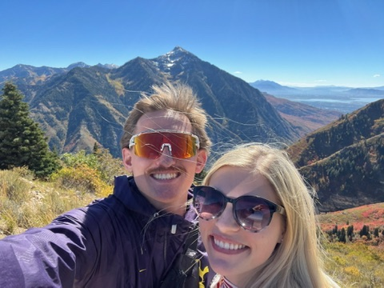
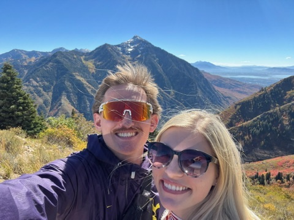

General Info
I am 23 years old, study Information Systems (at least that's the hope) at Brigham Young University. I love to play sports, play video games, read books, tinker w/ technology, workout, and work. I grew up in a small town (~10k people) in Waynesboro, PA. For the majority of you that don't know where this is, its about 15 minutes from Gettysburg, PA. I graduated in 2018, served a mission for the Church of Jesus Christ of Latter-day Saints in Bogotá, Colombia, and got married shortly after I returned.
My Wife & Me
My wife & I met in October 2020. We went on out first date December 12, 2020. We were engaged by February ??, 2021 (I know I should know that, but the marriage date is more important to me ;)). We got married May 12, 2021. We've been happily married since then. My wife, Grace, is amazing. She loves to bake, read, watch shows, do paint by numbers, and go to fun events w/ me!
Photos
 

My Passions
I love to do almost any physical activity barring dance because I have 2 left feet (Don't say that everyone can dance, I've tried, I've failed. Even dancer friends can't teach me..). Of all the physical activities, I am passionate about soccer, basketball, snowboarding, longboarding, and whichever intramural team I end up playing for at BYU.
I am also passionate about piano music - playing it, writing it, & listening to it. I started playing piano when I was 7. In true form, I fought my mother on it constantly. I hated practicing, but I was good at it. Now I love it. It is a big stress reliever for me, and one of my preferred creative outlets. I have composed 8 or 9 songs, but I've not been good at actually writing them down. I have recordings that I'll come back to when I have more time. I have 1 or 2 written down, the software for it, and a full MIDI keyboard to do it.
Another one of my passions is video games. I love to play Rocket League, Destiny 2, Fortnite, Minecraft, R6 Siege, Halo, & CoD among others. I also am an avid board/card game player. My preference is to play games with lots of strategy and planning. The list of games I like playing goes on for days, but we'll leave it at my liking any games except Apples-to-Apples (Cards Against Humanity & other versions are fine) and Cover Your Assets.
My Hobbies
I have ADHD and love to dabble in anything I find interesting. I love to tinker with technology - fixing computers, jailbreaking systems/consoles, improving my home setup via new systems like Pi-Hole & self-hosting, & hopefully soon to be added to the list, 3D printing. I like to read (and write) books. I like to take 7-minute power naps (I swear by them and they are the best thing ever). I like to drive and look at cool scenery. I like watching and keeping up with the NFL, NBA, & EPL (English Premier League). There isn't much that I don't like to do, but I do hate just sitting and doing nothing!